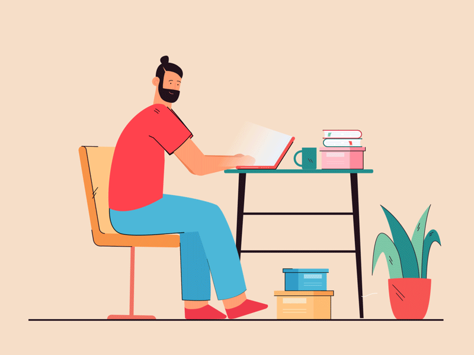
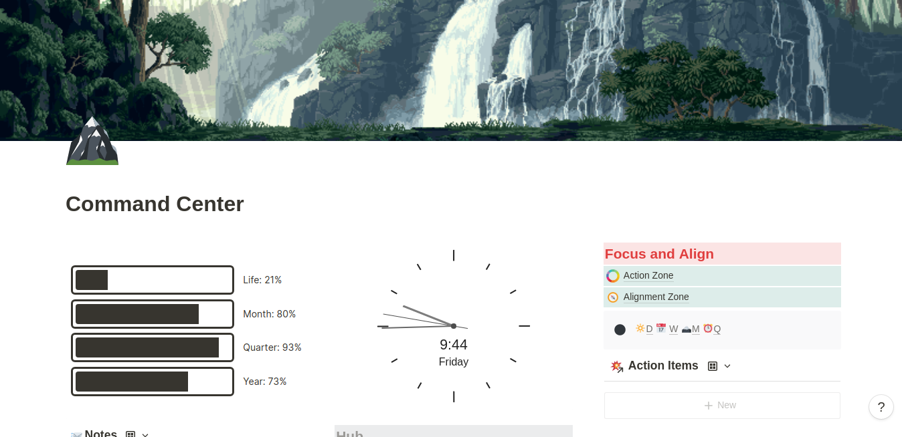

Why do your habits keep changing? The search for novelty
Sep 23 '21 • Written by Yassen Shopov
📖 9 minute read
At some point, I thought it was a personal issue of mine, but I came to realize that many people struggle with habits the same way I do. It is always exciting when you’re at the start of a new year, your list of goals in your hand, and an ambitious glimmer in your eyes.
However, once you’ve been going to the gym for a few weeks, stopped smoking for a while, or made some daily progress on your creative endeavors, the passion and motivation seem to … go off. It’s almost sad, knowing how motivated you were to do it right this time, and how good it was all going. But now going to the gym seems kinda boring, and the healthy meals don’t look green enough anymore, because they’re just this thing you do anyway.
The initial spark of inspiration, albeit important, doesn’t take us far and is extinguished pretty fast by the monotonous lifestyle that routines sometimes provide.
And this is for a reason, and that reason is called dopamine.
Essentially, our brains function in such a way as to allow for us to motivate ourselves, with both external and internal factors. Our brain releases dopamine, a feel-good chemical, when we anticipate a pleasurable sensation, something in the short term that would make us content. This is why the thought of getting that beach body is far more pleasurable than the thought of going to the gym and grinding it out.
And this is why you don’t just say “I’ll quit smoking” and just do it, without a second thought. If it were that easy, everybody would be doing it, and it wouldn’t be such a widely recognized addiction. It is difficult to go against your current addictions and obsessions, and it takes quite a lot of grit to get to the end-point. We are almost constantly searching for novelty - in how we look, how we feel, how the world around us looks, who the people around us are. As if we’re instinctually pre-programmed to fight routine and adapt to new and new strategies.
As this research paper perfectly illustrates, people are hard-wired to seek out new experiences. Scientists showed numerous similar pictures (landscapes, scenery, etc.) one after the other to their test subjects, and occasionally they put a different one, which stood out. It was recorded that the pleasure centers of the brain light up when novelty is experienced, even in such a clinical setting. You can imagine now why we find it hard to stick to routines.
Your desk, your safe haven
When you move to a new place, as I did recently, the urge to decorate is real.
You find places for everything, you watch your stuff fall neatly together, your pens and paper are at the right place and the work process runs relatively smoothly. This is, of course, until the moment it actually starts feeling comfortable. When you get used to your workspace situation, it ultimately starts feeling boring. Uninspiring. Monotonous.
And you find a new widget or a shiny new thing for your desk, and you think that, yes, this was the thing missing, now I’m ready to conquer the world of productivity. Except, in a few days, sometimes even less, even that wears off. And now you study at the library. But not at that place in the library, because you’ve sat there too many times, and now it’s too boring.
Our brains, apparently, are so well-programmed to search for novel experiences that we are willing to leave our already planned projects just to start completely new ones. It is the reason why people have so many hobbies and side-hustles “started” in a folder or on a sticky note somewhere. You will eventually get to them, just not right now, because you’re busy with this other thing (which, let’s be real, will go into the same forgotten folder sooner or later).
Oftentimes, the planning of a task is much more enjoyable than doing it. Planning a business is an amazing pastime for many people. You think of all the details, you think of what you’re gonna do with all that income, you prepare yourself for the inevitable podcasts and interviews that will follow. Exciting, exciting, exciting. Yet, when it comes down to sitting on your butt and doing the grind every single day, even if it is not a particularly difficult grind, motivation dissipates. Our career plans, our study plans, even our relationship plans are loosely motivated by our search for new experiences, and our inability to sit in one place.
“All of humanity’s problems stem from man’s inability to sit quietly in a room alone.” - Blaise Pascal
However, just knowing for a fact that our brains function better in the presence of novelty isn’t enough. What often helps in our work processes is recognizing it as a fact and taking active action to make sure we have enough novelty. This way we can counteract the boredom effect and stop our habits from changing so rapidly. It’s an ongoing struggle, but a pretty petty one, and one that can be easily beaten with a good strategy. So, ditch the idea that your desk would ever be perfect, and try to introduce some novelty every now and then. Not because it would finally make your desk your safe haven, but because your brain needs the shiny new thing to focus.
There are no permanent solutions to dynamic systems
As you may or may not know, I am a big Notion fan. Notion is a productivity app that lets you create your own systems and store your notes. The fun part is that it is very customizable, so you can play around with it forever and redesign it as many times as you want.
In the beginning, though, I was a tiny bit intimidated by this type of app. I wanted to have the perfect set-up, and it was just never really perfect. There were always some things that I wanted to change, so I did, which then inspired completely new projects, which I started. It seemed like managing this delicate system of an app pristine was harder than it was useful, so I think I dropped Notion for few months.
But then, I had a change of heart.
It didn’t make sense to me to not use a great productivity system just because I couldn’t get it perfect. Yes, it would have probably been a good idea to not tinker with it that much and just do my job of actually using the app, but oh well, just novelty things. Apparently, there are no perfect or permanent solutions to a shifting and dynamic system - and we should just accept that.
So now I make changes to my work environment every now and then. It happens naturally, when I start feeling bored. I have now trained myself to recognize this as a need for more novelty, and I try to introduce something new to my workspace every now and then, change my habits up, zoom out and get more clear-headed.
We can’t always trick our monkey brains into working for our own good, but we can get better at understanding them. And when we understand them, we get better at using them.
[8:05]
by Matt D'Avella